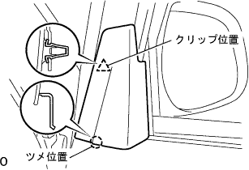
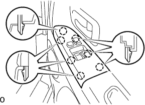
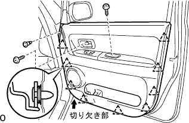
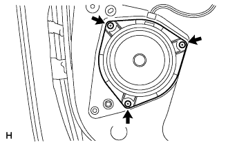

Front speaker ASSY No.1 (RH) Remove |
| 1. The front door roux bracket bracket garnish RH is removed |
Remove the clip (upper part) by hand.
|  |
Remove the claws (lower) while lifting it by hand, and remove the front door front trower frame braketto taganitsui RH.
| 2. Multiplex network Master switch ASSY |
|  |
Use a flathead screwdriver with a protective tape to remove the claws.
Cut the connector and remove the multi -plattsukusanetsu to work Master Sweets ASSY.
| 3. Remove the door pull handle |
Remove the screw and remove the door -pull handle.
| 4. Remove the front door trim board SUB-ASSY RH |
|  |
Take off the screw.
Use a plus driver to rotate the center of the clip 90 ° and remove the clip.
Use a flathead driver with a protective tape while pulling the trim board inside the vehicle to remove the nine clips in the figure.
Pull up the front door trim board RH and remove it.
| 5. Front speaker ASSY No.1 (RH) |
|  |
Cut the connector.
Remove the three rivets and remove the front speaker ASSY No.1.